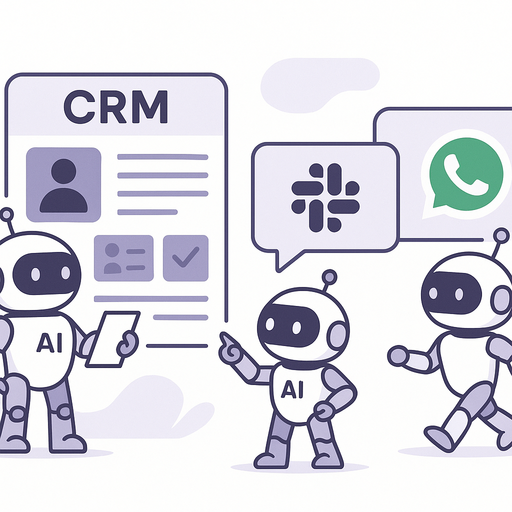
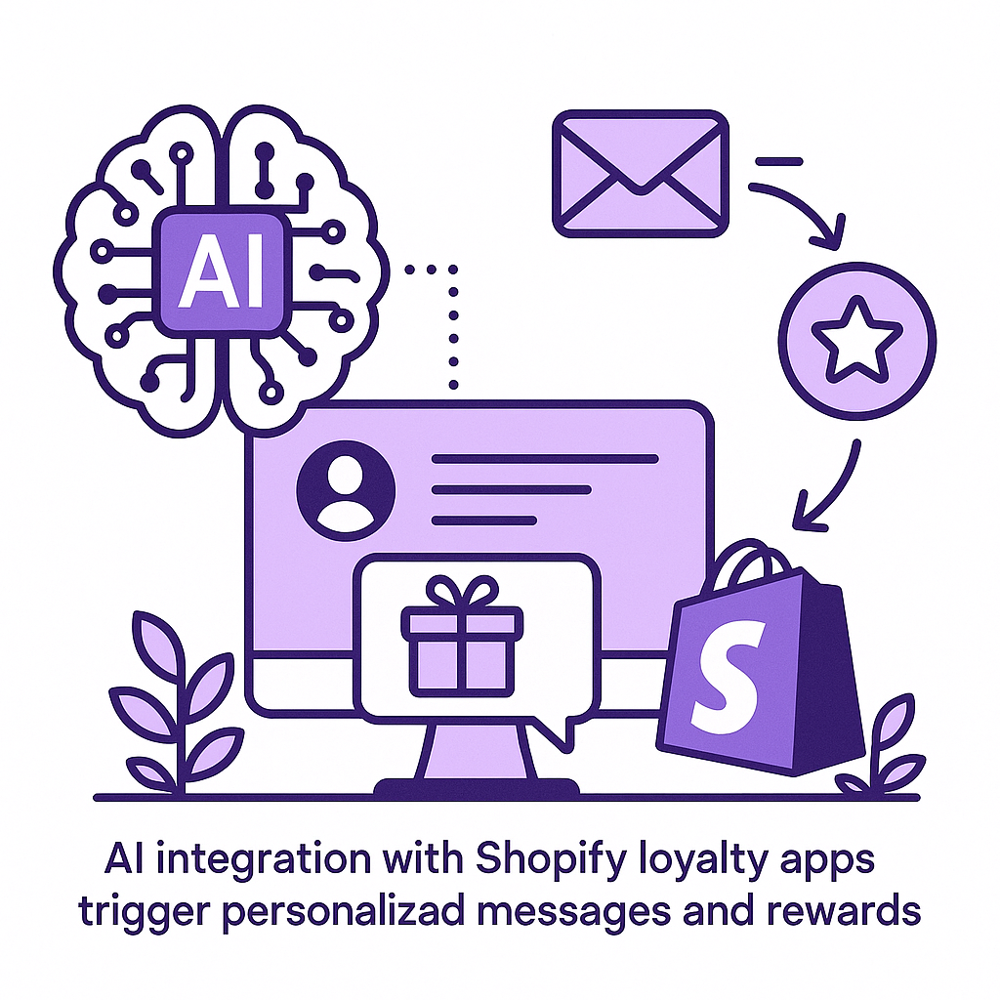
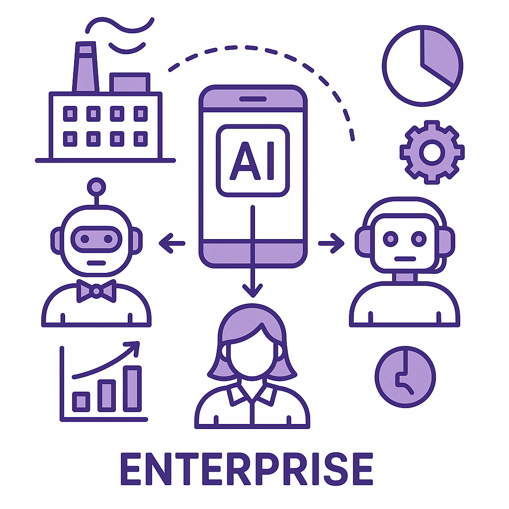

Publishing Recommendation
reviseThe current drafts contain excessive self-promotion and lack balance between trend analysis and Purands AI's offerings. This could make the posts feel like marketing pitches rather than insightful industry commentary.
Today's drafts need adjustment to better align with our brand voice. While they cover relevant trends, the posts are overly focused on promoting Purands AI's offerings, which detracts from providing unbiased, practical insights. A tighter balance between trend analysis and product mention is necessary to maintain credibility and reader trust.
LinkedIn Posts (8)
1. Salesforce rolls out new Slackbot AI agent ★ Purands solution · high priority
CTA: How are you integrating AI into your customer engagement strategy?

⬇ Download image{kind=link}
Image prompt · isometric-flat
Caption: AI agents transforming CRM interactions.
Alternative hooks
- Salesforce's new Slackbot AI agent is more than just a chatbot.
- AI is transforming CRM and customer engagement, one Slackbot at a time.
- Integrating AI into CRM: A game changer for retention marketing?
Research behind this post (sources, summaries & confidence)
Salesforce rolls out new Slackbot AI agent conf 0.80 · Practical AI agents for marketing ops
Salesforce's new AI agent on Slack highlights the increasing integration of AI in workplace tools, crucial for retention marketing as it can enhance CRM and customer engagement processes.
Sources & what I took from each
- Salesforce launched a Slackbot AI agent.: The VentureBeat article details the launch and its implications for CRM and customer engagement. ↗ read source
Examples
- Salesforce's integration of AI in Slack to improve workplace communication and CRM workflows.
Original trend links
Risks / caveats
- Competition from other major players like Microsoft and Google could impact adoption.
2. Shopify loyalty app development on GitHub ★ Purands solution · high priority
CTA: How are you leveraging loyalty programs to enhance customer retention?

⬇ Download image{kind=link}
Image prompt · isometric-flat
Caption: AI-driven loyalty programs in action.
Alternative hooks
- GitHub is buzzing with new projects focused on Shopify loyalty apps.
- Shopify loyalty apps on GitHub are more than just codebases; they're reshaping customer retention.
- New GitHub projects are turning Shopify into a loyalty powerhouse.
Research behind this post (sources, summaries & confidence)
Shopify loyalty app development on GitHub conf 0.70 · Shopify ecosystem
The development of loyalty apps on Shopify, as seen in several GitHub projects, indicates a strong focus on enhancing customer retention through loyalty programs, which aligns with retention marketing priorities.
Sources & what I took from each
- Multiple GitHub projects focused on Shopify loyalty apps.: The listed GitHub repositories show active development of loyalty apps, indicating a trend in enhancing Shopify's customer retention capabilities. ↗ read source
Examples
- GitHub projects such as 'loyalty-pulse' and 'loyalty-and-rewards' focused on Shopify integrations.
Original trend links
Risks / caveats
- The projects' impact depends on successful deployment and adoption by merchants.
3. WhatsApp commerce platform developments ★ Purands solution · high priority
CTA: Have you integrated commerce into WhatsApp yet? What challenges have you faced?
{kind=link}
Image prompt · isometric-flat
Caption: WhatsApp as a commerce platform.
Alternative hooks
- In APAC, WhatsApp is more than a chat app - it's a shopping mall.
- What's happening when WhatsApp turns into a marketplace?
- GitHub is buzzing with projects transforming WhatsApp into a commerce hub.
Research behind this post (sources, summaries & confidence)
WhatsApp commerce platform developments conf 0.70 · WhatsApp commerce
The development of WhatsApp-native commerce platforms shows the growing trend of integrating commerce into messaging apps, pivotal for APAC's mobile-first market, impacting customer engagement.
Sources & what I took from each
- Development of WhatsApp-native commerce platforms is ongoing.: The GitHub projects show active development of commerce integrations for WhatsApp, supporting the trend of social commerce. ↗ read source
Examples
- Projects like 'Vula-Group' and 'whatsappCommerce' demonstrate the integration of commerce capabilities on WhatsApp.
Original trend links
Risks / caveats
- Adoption depends on user acceptance and regulatory compliance in different regions.
4. AI agent sprawl in enterprises ★ Purands solution · high priority
CTA: How are you managing AI agent sprawl in your organization?

⬇ Download image{kind=link}
Image prompt · isometric-flat
Caption: Streamlined AI operations for enterprises.
Alternative hooks
- AI agents are growing faster than management systems can handle.
- Enterprises face AI agent sprawl - but there's a solution.
- Is AI sprawl causing chaos in your enterprise?
Research behind this post (sources, summaries & confidence)
AI agent sprawl in enterprises conf 0.60 · AI industry
The challenge of AI agent sprawl in enterprises highlights the need for effective AI management in customer engagement and retention strategies, underscoring the importance of control layers.
Sources & what I took from each
- AI agent growth is outpacing management systems in enterprises.: The VentureBeat article discusses the challenges enterprises face in managing AI agent sprawl, citing Gartner's estimation. ↗ read source
Original trend links
Risks / caveats
- Without effective management, AI sprawl could lead to inefficiencies and security risks.
5. YouTube changes view counting system
CTA: How do you think this change will affect your video strategy?
Alternative hooks
- YouTube just changed how it counts views.
- Marketers, YouTube's view counts just got a makeover.
- Video views on YouTube now align with Instagram and TikTok.
Research behind this post (sources, summaries & confidence)
YouTube changes view counting system conf 0.90 · AI in business
YouTube's new view counting method aligns with social media platforms, impacting how video engagement is measured, essential for marketers to assess content performance and customer engagement.
Sources & what I took from each
- YouTube has updated its view counting system.: Both The Verge and TechCrunch provide details on YouTube's system update and its alignment with other platforms. ↗ read source
Examples
- The change affects how marketers measure video engagement across platforms.
Original trend links
- https://www.theverge.com/streaming/981105/youtube-video-view-counting-update
- https://techcrunch.com/2026/08/17/youtube-will-now-count-a-view-as-soon-as-a-video-starts-playing/
Risks / caveats
- Changes in view counting could lead to discrepancies in historical data comparison.
6. Target strengthens inventory management with digital twins
CTA: How do you see digital twins reshaping other industries?
{kind=link}
Image prompt · isometric-flat
Caption: Digital twins in inventory management.
Alternative hooks
- Target is redefining retail with digital twins.
- Ever wonder how Target keeps its shelves stocked perfectly?
- Digital twins are changing the game for inventory management.
Research behind this post (sources, summaries & confidence)
Target strengthens inventory management with digital twins conf 0.80 · Product management
Target's use of digital twins for inventory management showcases innovative product management practices that can enhance supply chain efficiency and customer satisfaction, relevant for retention strategies.
Sources & what I took from each
- Target is using digital twins for inventory management.: The Retail Dive article details Target's implementation of digital twins to improve inventory management and operational efficiency. ↗ read source
Examples
- Target's integration of digital twin technology to optimize supply chain operations.
Original trend links
Risks / caveats
- Dependence on digital twin technology could pose a risk if systems fail or data integrity is compromised.
7. AI Evaluation Should Work With Humans
CTA: What are your thoughts on integrating human oversight in AI evaluation?
Alternative hooks
- AI systems are often seen as black boxes.
- Why does trust in AI matter?
- Building AI without human oversight is risky.
Research behind this post (sources, summaries & confidence)
AI Evaluation Should Work With Humans conf 0.70 · AI industry
The debate on AI evaluation methods emphasizes the integration of human oversight in AI systems, important for developing trustworthy AI applications in retention marketing.
Sources & what I took from each
- AI evaluation should include human collaboration.: The Arxiv paper supports the need for human oversight in AI systems to enhance trustworthiness. ↗ read source
Original trend links
Risks / caveats
- Implementation of human oversight in AI systems could slow down deployment and increase costs.
8. Google redesigns search box after 25 years
CTA: How do you think this redesign will change online consumer behavior?
Alternative hooks
- For the first time in 25 years, Google has redesigned its search box.
- Google's search box got its first major redesign in 25 years.
- After 25 years, Google's search box finally sees a major redesign.
Research behind this post (sources, summaries & confidence)
Google redesigns search box after 25 years conf 0.60 · AI in business
Google's redesign of its search box, a key interface for digital interaction, may impact how consumers find and engage with brands online, crucial for digital marketing strategies.
Sources & what I took from each
- Google has redesigned its search box for the first time in 25 years.: The VentureBeat article discusses the redesign and its potential impact on user interaction with search engines. ↗ read source
Original trend links
Risks / caveats
- The actual impact on consumer behavior and marketing strategies is uncertain until more data is available.
Today's Trends
| # | Trend | Category | Why it matters |
|---|---|---|---|
| 1 | Anthropic’s annualized revenue surges to $65B
source source |
AI industry | Anthropic's rapid revenue growth highlights the escalating demand and investment in AI technology, which can influence retention marketing strategies by integrating more advanced AI solutions for customer engagement. |
| 2 | Salesforce rolls out new Slackbot AI agent
source |
Practical AI agents for marketing ops | Salesforce's new AI agent on Slack highlights the increasing integration of AI in workplace tools, crucial for retention marketing as it can enhance CRM and customer engagement processes. |
| 3 | Shopify loyalty app development on GitHub
source source |
Shopify ecosystem | The development of loyalty apps on Shopify, as seen in several GitHub projects, indicates a strong focus on enhancing customer retention through loyalty programs, which aligns with retention marketing priorities. |
| 4 | AI agent sprawl in enterprises
source |
AI industry | The challenge of AI agent sprawl in enterprises highlights the need for effective AI management in customer engagement and retention strategies, underscoring the importance of control layers. |
| 5 | WhatsApp commerce platform developments
source source |
WhatsApp commerce | The development of WhatsApp-native commerce platforms shows the growing trend of integrating commerce into messaging apps, pivotal for APAC's mobile-first market, impacting customer engagement. |
| 6 | Nvidia's $21B stake in SpaceX
source |
AI startups | Nvidia's investment in SpaceX suggests a strategic move towards integrating AI capabilities in innovative sectors, potentially influencing AI startup strategies and retention marketing through advanced analytics. |
| 7 | YouTube changes view counting system
source source |
AI in business | YouTube's new view counting method aligns with social media platforms, impacting how video engagement is measured, essential for marketers to assess content performance and customer engagement. |
| 8 | Google redesigns search box after 25 years
source |
AI in business | Google's redesign of its search box, a key interface for digital interaction, may impact how consumers find and engage with brands online, crucial for digital marketing strategies. |
| 9 | AI Evaluation Should Work With Humans
source |
AI industry | The debate on AI evaluation methods emphasizes the integration of human oversight in AI systems, important for developing trustworthy AI applications in retention marketing. |
| 10 | Target strengthens inventory management with digital twins
source |
Product management | Target's use of digital twins for inventory management showcases innovative product management practices that can enhance supply chain efficiency and customer satisfaction, relevant for retention strategies. |
Risk Assessment
- Overemphasis on Purands AI's products may overshadow the broader trends being discussed, affecting credibility.
- Potential misalignment with the brand voice, which should prioritize practical insights over promotional content.
Suggested LinkedIn Comments (30)
Open each post, then paste the copied comment. Nothing is posted automatically.
1. opinion · rss:techcrunch.com — The model maker added $18 billion in annualized revenue in two months.
Post by: rss:techcrunch.com
Why it works: It acknowledges the achievement while addressing potential challenges, showing a balanced perspective.
↗ Open LinkedIn post to paste comment2. insight · rss:techcrunch.com — "We have some really ambitious plans to help you work with AI in Chrome to get t
Post by: rss:techcrunch.com
Why it works: It provides a useful angle on the implications of AI integration, which is often overlooked.
↗ Open LinkedIn post to paste comment3. insight · rss:techcrunch.com — Cybersecurity experts who investigate spyware attacks say the number of people w
Post by: rss:techcrunch.com
Why it works: It adds a relevant takeaway about the increasing importance of cybersecurity in tech.
↗ Open LinkedIn post to paste comment4. insight · rss:techcrunch.com — If you’ve been circling around Disrupt, then now’s the best time to lock in your
Post by: rss:techcrunch.com
Why it works: It offers practical advice on maximizing the value of attending such events.
↗ Open LinkedIn post to paste comment5. insight · rss:techcrunch.com — Spotify launches a new feature that gives users a chance to explain the stories
Post by: rss:techcrunch.com
Why it works: It highlights the strategic advantage of the feature in enhancing user interaction.
↗ Open LinkedIn post to paste comment6. opinion · rss:techcrunch.com — Higgsfield, founded by former Snap exec Alex Mashrabov, lets users create AI ima
Post by: rss:techcrunch.com
Why it works: It presents a critical view on the challenges of AI in creative fields, sparking thought.
↗ Open LinkedIn post to paste comment7. opinion · rss:techcrunch.com — Reddit is beginning to test video and audio versions of popular posts, allowing
Post by: rss:techcrunch.com
Why it works: It provides a critical assessment of potential user experience issues, adding depth to the discussion.
↗ Open LinkedIn post to paste comment8. insight · rss:techcrunch.com — Sonic Fire Tech raised its new funding to help get its sound-powered fire protec
Post by: rss:techcrunch.com
Why it works: It highlights the real-world applications and impact of the technology, adding depth to the post.
↗ Open LinkedIn post to paste comment9. opinion · rss:techcrunch.com — The change comes a year after YouTube applied the same approach to counting view
Post by: rss:techcrunch.com
Why it works: It discusses the implications for content creators, offering a perspective not immediately obvious.
↗ Open LinkedIn post to paste comment10. insight · rss:techcrunch.com — Feedly says a bug is behind the performance issues that have made its web app ne
Post by: rss:techcrunch.com
Why it works: It emphasizes the importance of quality assurance and customer support, relevant to the post's context.
↗ Open LinkedIn post to paste comment11. respectful challenge · rss:www.theverge.com — Reddit is trying out a new way for people to take in content on Reddit: by turni
Post by: rss:www.theverge.com
Why it works: It questions the impact on engagement, adding a critical perspective.
↗ Open LinkedIn post to paste comment12. insight · rss:www.theverge.com — ABC News has officially introduced Searched, a livestreamed show that highlights
Post by: rss:www.theverge.com
Why it works: It connects the show's concept to broader media trends, offering context.
↗ Open LinkedIn post to paste comment13. insight · rss:www.theverge.com — Are you curious about custom mechanical keyboards, but don’t want to spend hundr
Post by: rss:www.theverge.com
Why it works: It highlights a strategic market opportunity, adding context to the purchase.
↗ Open LinkedIn post to paste comment14. insight · rss:www.theverge.com — Like many of us, Sam Rosenthal plays games like Wordle every day, chasing after
Post by: rss:www.theverge.com
Why it works: It ties the post to a broader lesson on creativity, making it relatable.
↗ Open LinkedIn post to paste comment15. respectful challenge · rss:www.theverge.com — YouTube will soon count a view as soon as a video starts to play, lining up with
Post by: rss:www.theverge.com
Why it works: It raises potential concerns about metric accuracy, offering a critical lens.
↗ Open LinkedIn post to paste comment16. insight · rss:www.theverge.com — Analogue and Supreme are teaming up to release metallic versions of the Analogue
Post by: rss:www.theverge.com
Why it works: It connects the product launch to broader consumer trends, enriching the discussion.
↗ Open LinkedIn post to paste comment17. insight · rss:www.theverge.com — Sonos released an update to its mobile app that finally introduces support for i
Post by: rss:www.theverge.com
Why it works: It highlights the practical benefits of the feature, adding depth to the update.
↗ Open LinkedIn post to paste comment18. opinion · rss:www.theverge.com — About 22 miles south of the former mining town of Patagonia, Arizona, down a win
Post by: rss:www.theverge.com
Why it works: It uses the tree as a metaphor for environmental issues, making it thought-provoking.
↗ Open LinkedIn post to paste comment19. insight · rss:www.theverge.com — Apple's changing its rules for data collection consent prompts after Germany's F
Post by: rss:www.theverge.com
Why it works: It contextualizes the policy change within its broader industry impact, adding depth.
↗ Open LinkedIn post to paste comment20. opinion · rss:www.theverge.com — The smart speaker market is more or less dominated by major tech companies: Appl
Post by: rss:www.theverge.com
Why it works: It points out a unique selling proposition, enhancing the product's appeal.
↗ Open LinkedIn post to paste comment21. insight · rss:feeds.arstechnica.com — Again, the CDC did not publish a full report and instead simply put the data onl
Post by: rss:feeds.arstechnica.com
Why it works: It highlights the potential pitfalls of providing raw data without context, adding depth to the post.
↗ Open LinkedIn post to paste comment22. opinion · rss:feeds.arstechnica.com — “We're not necessarily building in a dogmatic fashion towards full autonomy.”
Post by: rss:feeds.arstechnica.com
Why it works: It offers a perspective on strategic flexibility in tech development, aligning with the author's viewpoint.
↗ Open LinkedIn post to paste comment23. expansion · rss:feeds.arstechnica.com — Here's what it was like watching a total solar eclipse 90 minutes north of Madri
Post by: rss:feeds.arstechnica.com
Why it works: It connects the personal experience to a broader theme of appreciation, enriching the post's narrative.
↗ Open LinkedIn post to paste comment24. insight · rss:feeds.arstechnica.com — "Network effect" can run in reverse.
Post by: rss:feeds.arstechnica.com
Why it works: It adds a technical layer to the discussion on network effects, enhancing the understanding of potential downsides.
↗ Open LinkedIn post to paste comment25. opinion · rss:feeds.arstechnica.com — Despite loss, carriers still claim selling device-location data isn't illegal.
Post by: rss:feeds.arstechnica.com
Why it works: It addresses the ethical dimension of data privacy, adding a thoughtful critique to the legal perspective the post discusses.
↗ Open LinkedIn post to paste comment26. insight · rss:feeds.arstechnica.com — Petlibro says feeders perform scheduled feedings offline. Users report otherwise
Post by: rss:feeds.arstechnica.com
Why it works: It emphasizes the importance of transparency and reliability in product communication, complementing the post's issue.
↗ Open LinkedIn post to paste comment27. expansion · rss:feeds.arstechnica.com — Amazon’s team uses a <em>T. rex</em> preparing to devour a book as its logo.
Post by: rss:feeds.arstechnica.com
Why it works: It provides an additional layer of analysis on branding strategy, enhancing the post's mention of Amazon's logo.
↗ Open LinkedIn post to paste comment28. insight · rss:feeds.arstechnica.com — The Gasolini AR1 uses 2-cylinder Honda bike engine, and an EV is underway, too.
Post by: rss:feeds.arstechnica.com
Why it works: It draws a connection between the car's design and broader trends in sustainable engineering, enriching the post's content.
↗ Open LinkedIn post to paste comment29. insight · rss:feeds.arstechnica.com — Filing comes after Elon Musk announced exclusive arrangement to kit out its data
Post by: rss:feeds.arstechnica.com
Why it works: It adds a critical dimension about market dynamics and competition, deepening the discussion around the post.
↗ Open LinkedIn post to paste comment30. expansion · rss:feeds.arstechnica.com — "It highlights the brutality of medieval warfare," said paleopathologist Jo Buck
Post by: rss:feeds.arstechnica.com
Why it works: It connects historical insights to modern-day relevance, broadening the implications of the post's focus on medieval warfare.
↗ Open LinkedIn post to paste comment